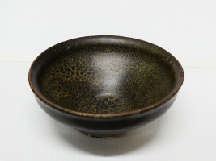
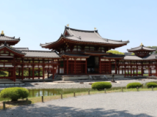
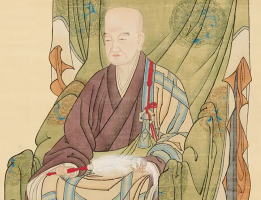
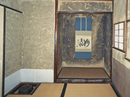

- トップ >
- 抹茶の歴史
抹茶の歴史
抹茶がどのように生まれ、広まっていったのかを、時代とともに紹介します。
- 抹茶のはじまり ~ 中国・宋の点茶文化 ~
- 日本への伝来 ~ 平安〜鎌倉の喫茶文化の始まり ~
- 鎌倉時代 ~ 栄西と喫茶の習慣（禅と茶の結びつき） ~
- 室町時代 ~ 茶道の原型が生まれる（茶室・茶器・美意識の発展） ~
- 明治ー昭和 ～抹茶の生産技術の進化～
- 現代 ～抹茶スイーツと世界的ブーム～
抹茶のはじまり ~ 中国・宋の点茶文化 ~

抹茶の原型は、中国・宋の時代に生まれました。茶葉を細かく粉にし、湯を注いで点てる「点茶法」が広まり、貴族や僧侶の間で嗜まれていました。この文化が後に日本へ伝わり、抹茶の基礎となります。
日本への伝来 ~ 平安〜鎌倉の喫茶文化の始まり ~

留学僧が中国から茶の種と点茶文化を持ち帰ったことで、日本で喫茶が始まりました。最初は薬として飲まれ、心身を整える“健康飲料”として貴族や僧侶の間で広まりました。
鎌倉時代 ~ 栄西と喫茶の習慣（禅と茶の結びつき） ~

栄西が『喫茶養生記』を著し、茶の効能を広めました。禅寺では修行の一環として茶を飲む習慣が生まれ、精神を整える飲み物として抹茶文化が根づいていきます。
室町時代 ~ 茶道の原型が生まれる（茶室・茶器・美意識の発展） ~
将軍家の保護により茶会文化が発展し、茶室や茶器の美意識が高まりました。茶を点てる行為そのものが“芸術”として扱われ、茶道の原型が形づくられます。
安土桃山〜江戸時代 ~ 千利休と茶道の確立（侘び寂びの精神） ~

千利休が「侘び寂び」の精神を重視し、茶道を芸術として完成させました。茶道の流派が生まれ、武士や町人にも広まり、抹茶は日本文化の中心的存在となります。
現代 ~ 抹茶スイーツと世界的ブーム（伝統×モダン） ~
現代では、抹茶ラテや抹茶スイーツが大人気となり、海外でも “Matcha” として広く知られるようになりました。伝統文化と現代の食文化が融合し、新しい抹茶の楽しみ方が広がっています。